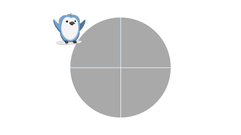
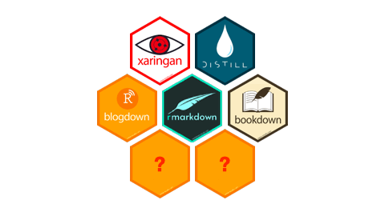
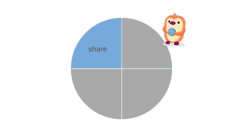
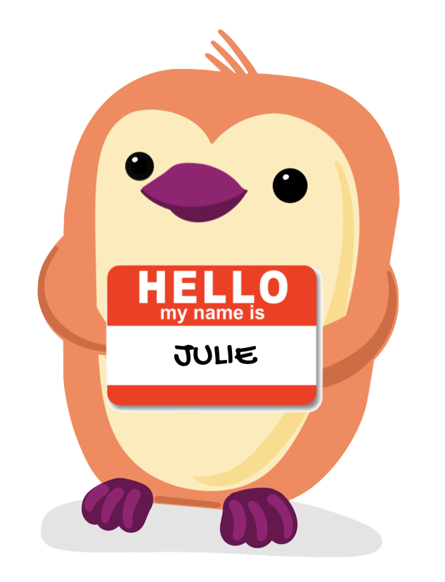
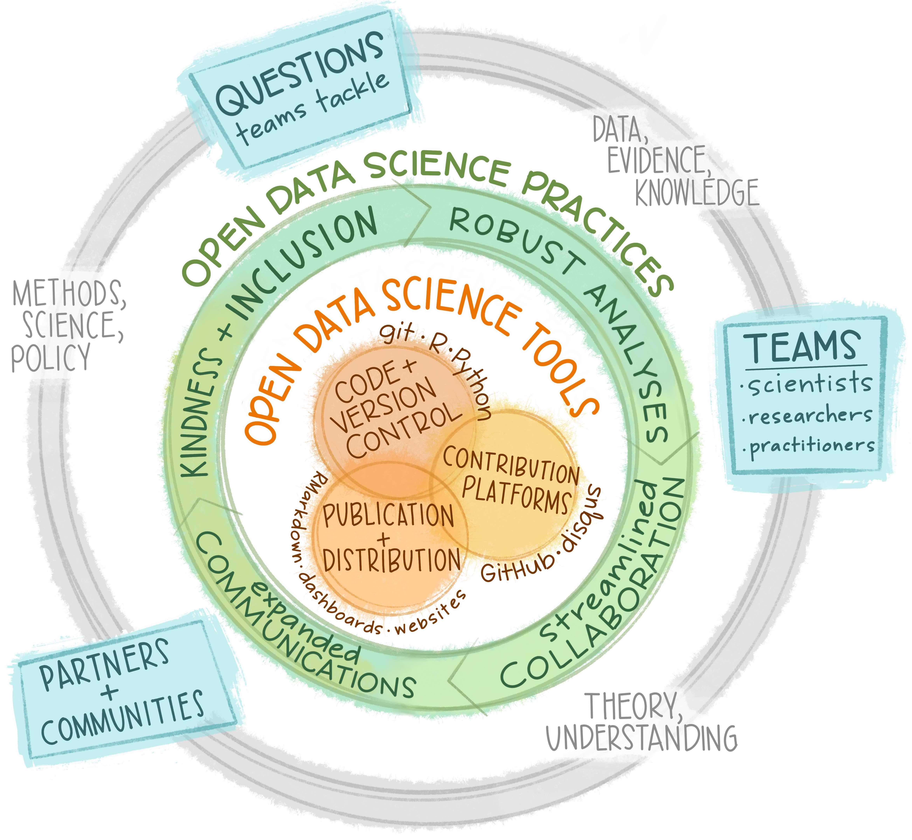

Hello Quarto
share • collaborate • teach • reimagine
temporary url: https://mine-cetinkaya-rundel.github.io/hello-quarto/
Hello, Quarto?
Hello, Quarto?
Quarto is for people who love R Markdown
Quarto is for people who don’t know R Markdown
Quarto unifies & extends the RMarkdown ecosystem
A new open-source scientific and technical publishing system. The goal is to make the process of creating and collaborating on scientific and technical documents dramatically better.
Illustration:
- Inputs in multiple languages (R, Python, Julia)
- Outputs in multiple formats (PDFs, websites, word, slides)
- All going through the same machinery (Quarto logo)
Hello, Quarto!
Share


- I’m an educator
- I spend more of my time writing things to share than anything else
- One system that allows me to output to multiple formats is not just a time saver, but essential
Next generation R Markdown

DEMO: Flexibility in the formats
This will be replaced with screen recording.
- Take .Rmd and change extension to .qmd
- The .Rmd will already have a table and a plot, palmerpenguins
- Knit it, then change to .qmd. Knit again
- Note code chunk options, YAML completion, YAML errors (or other high-level differences)
- Change output format to yml slides
- Add a
_quarto.yml, render to website- To hand-off to Julie: (a tiny website)
- yaml completion and yaml errors
Knit vs render?
Illustration: A graphic and a arrow pointing at where they’re different, at a high level.
- Rmd -> knitr -> pandoc: R package (rmarkdown) doing the orchestration
- Qmd -> knitr/jupyter -> pandoc: Quarto CLI doing the orchestration
Moving between “things” is easy straightforward
Moving between formats within Quarto is straightforward
- Often need to deliver same/similar content in different formats (documents, slides, book, website)
- It’s super helpful when transitioning requires minimal futzing around with source code (like Rmd 8 ways…)
Animation: Version of this where the ball is flying to the other side.
Collaborate

- I’m a marine ecologist > data scientist > open science champion
- rstats changed my life - Better science, Kinder science refs
- Long-time RMarkdown user - Launched Openscapes w/ RMarkdown (blogdown website, bookdown curriculum, distill blog events page). Out of the box!

Openscapes
We mentor research teams to transition to inclusive open data science workflows
We’ve worked with 70+ teams
maybe logos of groups we’ve worked with?
Either Allison’s art or this quote:
“We’re fisheries scientists, we know that when we’re in rough seas, it’s important that you keep the ship afloat, AND get out of the storm. Openscapes helps teams steer out of the storm of forwarded emails with 37 versions of the same Excel file and to the calmer waters of open science, and collaborations, using tools like R”
- Dr. Adyan Rios, National Oceanographic and Atmospheric Administration
[picture of Ady!]
Openscapes <> Quarto story begins with NASA
🚀🌏
NASA-Openscapes: helping researchers using NASA Earthdata transition analytical workflows to the Cloud
But I had a secret
I’d seen what was possible with RMarkdown
Experience and confidence built up over years
Quarto let me bring my secret to Python/NASA
Collaborating with J.J. and the Quarto dev team
NASA Mentors saw it and were willing to go for it
Earthdata Cloud Cookbook
Image: Screenshot of quarto Earthdata Cloud Cookbook
creating collections
orientation
Interoperability & collaboration
Combining different file types
Image: Screenshot of portion of _quarto.yml: .ipynbs, .rmds, .qmds
DEMO: Flexibility in the tooling
This will be replaced with screen recording.
- Render Mine’s example site in JupyterHub, quarto preview
- Add
.ipynb, workflow (code: palmerpenguins in python?) quarto convertto .qmd- Open in VS Code, show
.qmd(cmd-shift-k to render [attention to other tool chains available]) - Mention: You install Quarto with a CLI, (like git) so you can work with whatever tooling you want
Animation: Version of this where the ball is flying to the other side.
Teach

Use Quarto to accomplish existing goals
How academics share their teaching resources/ new avenues for publishing:
- Tooling that makes it easy to share what you do with the world on the web is incredibly useful – if it’s not easy to make a course website, you won’t.
- It’s useful to the world – Open sharing of knowledge, other people can learn from and reuse.
- It’s useful to you – It’s a way of getting credit for your work, and when it comes time for annual review/promotion materials, it’s easy to say “here is everything I created”.
Different on the outside, similar on the inside
Image: Screenshots of each next to each other on top row, folder organization of each on the bottom row. Top looks different, bottom looks very similar.
- Teaching: Course website with obvious folders
- Writing: Book - R4DS
- Research: Journal articles
DEMO: File architecture, books
This will be replaced with screen recording.
- Short - “a few things I’ve learned transitioning Rmd -> quarto”
- Change
_bookdown.ymlto_quarto.yml- maybe… - My bookdown H1 headers were markdown
# Like This; quarto book will build but the rest of the headers don’t show up on the right TOC. Change to yamltitle: Like This. Also will look right in the viewer.
Moving between “things” is easy straightforward
Moving from R Markdown to Quarto is straightforward:
- Is teaching Quarto different from teaching R Markdown? Easier / harder / not different?
- Potential anecdote: Art history student writing thesis in Quarto. One semester to thesis writing a much less steep learning curve…
Animation: Version of this where the ball is flying to the other side.
Reimagine

Reimagining science
beyond publications, beyond code & data: websites, blogs, shiny apps…
beyond silos, domains, borders, languages: sharing, collaboration…
open web…
culture change
actionable change (pandemic)
Open science as a movement
(It’s about products (access to data, code, publications))
It’s about process. Workflows. People. Daily habits. Culture. Open source tooling.
It’s the way science should be done, but who can participate? Both from a tech and culture perspective
Hugely inspired by Climate Justice, Get Out the Vote movements
Urgency: Why this matters. Collaborate with people sooner, co-create/reuse not reinvent. Connect the skills to the values with the urgency.
We’ve been learning a lot through helping teams reimagine
Tackling challenges in new ways means new tech, new habits, new culture.
Important for new & seasoned coders, and folks who don’t identify as coders.
Reducing friction so folks focus their time on their work/science: less reinventing
Quarto really helps underscore these points
Create space
Prioritize time.
Build trust, psychological safety, inclusion
Ask how people work, where they’re stuck, what they know.
Foster a learning culture. And a teaching culture. Empathy. Growth Mindset. Meet people where they are.
Image: Seaside Chats, Surf sessions
Create place
Quarto has been really key for us with NASA Openscapes (also JupyterHub, GitHub, Google Docs)
Where we put things, what contributing looks like
Image: Screenshot of quarto 2021 Cloud Hackathon site
Catalina quote: share with participants ahead of time, “I still get kudos”
Reuse: Create-once-use-often. Reused 10x since
Share ideas earlier
not limited to a final publication
Catalina’s quote: comfortable sharing open work, imperfect
Image: Amy’s Quarto Slides from .ipynb
Make the implicit explicit
Make the implicit explicit - writing things down
Build inclusion into your daily work - onboarding
Image: Gavin Fay lab manual
“Prospective students in my research group say how much they appreciate the lab manual and it’s a reason they want to work with us” - Dr. Gavin Fay
DEMO: Visual editor
Leverage tooling that reduces barriers
- open project in RStudio
- Visual Editor - friendly for non-coders. Reimagine who participates.
- Also nice for markdown-savvy writers
- Show tips: “I learned this from Mine while we were preparing our slides”
- Images, Tables
- Call-outs
- Citations: DOIs
Reimagining together
All We Can Save:
” ‘We’ speaks to the collective, to collaboration, to community, to the relational work at hand. Addressing the climate crisis…will take everyone.
‘We’ speaks to justice, to how we do the work that needs doing and whose contributions are valued. We cannot, we must not, go it alone” - Ayana Elizabeth Johnson & Katharine Wilkinson,
Summary
Illustration: Presented as 4 quadrants in the Quarto logo
Share.
Teach.
Collaborate.
Reimagine.
So much more to say…
“12 more things we didn’t get to showcase”
Illustration / animation: Penguin juggling, excitement.
“Diagram feature” maybe code | output
Works with Shiny - that’s all to say
Quarto pub? What it accomplishes | what it looks like
Freeze > blog posts, jupyter notebooks
Each book chapter starting in a fresh session opening as you’d expect them to
Table > 2 tables next to each other
Table in the margin
Chalkboard on slides
multiplex: Slides / scroll for audience
Downlit (link directly to mutate function documentation pkgdown)
Include xaringan slides in Quarto project with resources
quarto publish
Coda
- RMarkdown has helped code be part of something you share
- Tooling that makes things easy can help be culture change
- Tooling culture change bc repro and sharing
- Quarto could help bring about culture change across languages
Quarto examples and resources
Call to Action: try it out!
- Quarto docs
- Mine’s Toronto talk
- Julie’s Quarto tutorial
- Openscapes Community Call
- Sample sites, books, etc.
- mine’s course sites
- vetiver
- r4ds
- other slide decks from conf?
- Go here to find the source code for the things we built in the talk…
Cutting room floor
The following slides won’t be in the final talk
(Champions landscape)

Fostering a culture of reuse
- Interoperability (language, tooling, people) –>
- Enabling collaborations, transferrable skills
- Can collaborate with people sooner.
- Tooling that makes things easy can help be culture change
- Tooling > culture change bc repro and sharing

Openscapes approach
Our focus:
Researcher-centered, focused on teams.
Create space & place to explore & learn.
Cultivate relationships & real connections.
Open culture: Learning, teaching, iterating.
Our roles:
Mentor, facilitator, teacher, coach, community organizer
Project lead, tech infrastructure setup
Merger (and creator) of merge conflicts
Open source advocate
Researcher advocate
Hi, I’m Julie
- Long-time user of R Markdown, and also Quarto
- Changed my work-life and my life-life
- Theme: collaborating
NASA Openscapes
Supporting research teams using NASA Earthdata as they migrate analytical workflows to the Cloud
Image: NASA logo, zoom faces?
Our goals:
- engage a Mentor community
- empower research teams
- amplify open leadership
Openscapes: better science for future us
We mentor environmental and Earth science teams
Roles
Openscapes
Quarto enables interoperability and collaboration
Streamlines teamwork
- shared vision: code and text together beautifully
- interoperability with tech
- interoperability with people